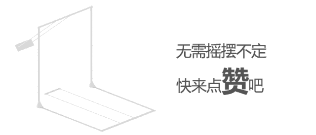

新的征程

还记得刚踏入大学校园时的自己吗？那时的我们，手拿着录取通知书，满怀着对大学生活的憧憬，面对着陌生的环境，迷宫一般的教学楼，在社团招新时挑花了眼……是去年的邂逅让我们成为了电协里并肩同行的伙伴。有着同样的目标，做着喜欢的事情，一起嬉笑吵闹，一起发展社团。是我们让社团变得鲜亮而富有活力，让所有关于电协成长的故事都有了非凡的意义。

编辑：张涛
还记得刚踏入大学校园时的自己吗？那时的我们，手拿着录取通知书，满怀着对大学生活的憧憬，面对着陌生的环境，迷宫一般的教学楼，在社团招新时挑花了眼……是去年的邂逅让我们成为了电协里并肩同行的伙伴。有着同样的目标，做着喜欢的事情，一起嬉笑吵闹，一起发展社团。是我们让社团变得鲜亮而富有活力，让所有关于电协成长的故事都有了非凡的意义。

编辑：张涛